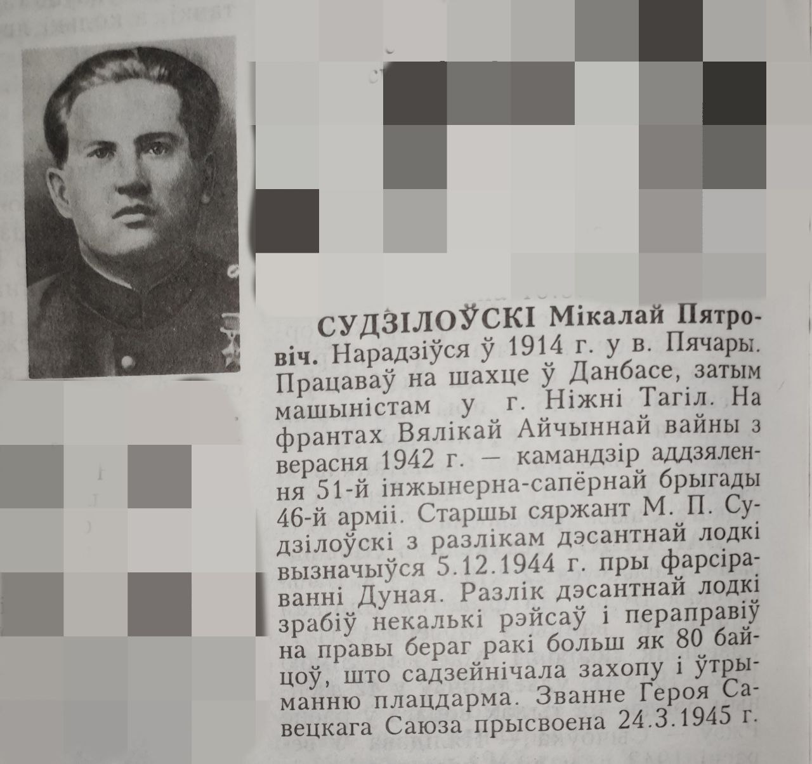

 СУДИЛОВСКИЙ Николай Петрович. Он родился в 1914 году в селе Пещеры. Работал на шахте в Донбассе, затем машинистом в Нижнем Тагиле. На фронтах Великой Отечественной войны с сентября 1942 года был командиром 51-й инженерно-саперной бригады 46-й армии. Старший сержант М. П. Судзиловский отличился с расчетом десантного катера 5 декабря 1944 года при форсировании Дуная. Экипаж десантного катера совершил несколько рейсов и переправил на правый берег реки более 80 бойцов, что способствовало захвату и поддержанию плацдарма. 24 марта 1945 года ему было присвоено звание Героя Советского Союза.


ЗИНКОВИЧ Митрофан Иванович. Генерал-майор (1942). Он родился 27.06.1900 в селе Пещеры. От сержантов лыжного батальона. В годы Великой Отечественной войны на Ленинградском, Юго-Западном, Сталинградском, Южном, 3-м, 4-м Украинских фронтах: командир стрелковой дивизии, полка, начальник штаба. Участник боев под Ленинградом, Сталинградом, на Днепре, Днестре, участник освобождения Румынии, Болгарии, Югославии, Чехословакии, Венгрии и Австрии. Отличился умелым руководством частями дивизии при форсировании Днепра и освобождении Херсона. С 1946 года на командных должностях в Красной Армии. 19 марта 1944 года ему было присвоено звание Героя Советского Союза.
Человек и его работа
Александр Цэрашенко родом из села Братсковичи. Но в связи с чернобыльской катастрофой мне пришлось сменить место жительства. Семья переехала в Шарики. И вот уже 15 лет Александр работает в колхозе «Россия». Ему нужна профессия в сельском хозяйстве. Механик Терешенка. Ему приходится выполнять различные работы на тракторе МТЗ-82. И что примечательно, ему это всегда успешно удается.
Старательный механик пользуется уважением в коллективе за трудолюбие, исполнительность и ответственность. Он хороший семьянин. 3. С женой Людмилой они воспитывают дочь Настю. Сейчас Александр занимается содержанием фермы. Он доставляет корм для животных на своем тракторе. К его работе претензий нет. На фото: Александр ТЕРЕШЕНКО. Фото Людмилы Смоляковой.
В первые годы Великой Отечественной войны пропавших без вести было гораздо больше, чем тех, кто смог быть похоронен после боя или после смерти в госпитале и занесен в списки безвозвратных потерь.
Солдаты, принявшие на себя первый шквал огня, погибли неизвестными. Они залегли на границе, при отступлении и окружении, целыми полками и дивизиями. Среди них были летчики, не вернувшиеся с боевых заданий, разведчики, погибшие в тылу врага, пехотинцы, оставшиеся без следа при попаданиях снарядов и бомб или заживо похороненные в траншеях. Они погибли в партизанских отрядах и в антифашистском подполье, на своей земле и за рубежом, в лагерях.
Ценой своей жизни они остановили продвижение врага вглубь территории своей Родины. Без них не было бы 6-й Победы.
В военкомате вдовам и матерям дали официальные разъяснения: пропавшим без вести считается тот, кто не вернулся в свою дивизию во время боевых действий. И хотя большинство из них погибло, обстоятельства боя не позволили это установить. Не зная места захоронения близкого человека, родственники продолжают искать его могилу или свидетелей-однополчан, которые помогают выяснить подробности гибели.
Памятники, установленные в городах и райцентрах, откуда люди ушли на войну, не всегда имеют имена тех, кто пропал без вести, был расстрелян, умер от голода и издевательств в концлагерях. Вы в свое время пытались их рисовать не только на памятниках, но и на истории.
Эту несправедливость, пусть и с опозданием, исправляет историко-документальный фильм «Хроники памяти».
В. И. Лемяшонак.
Елисеенко Николай Иванович, 1975 г.р., уроженец д. Колодезская Костюковичского района, проживает пос. Шарейки д.7 — 9.11.2006 года ушел из дома и пропал без вести.
Антипенко Иван Арсеньевич, р. в 1925 г.,без вести.
Лопшанков Василий Игнатович, партизан 5-й Клятнинской бригады, без вести.